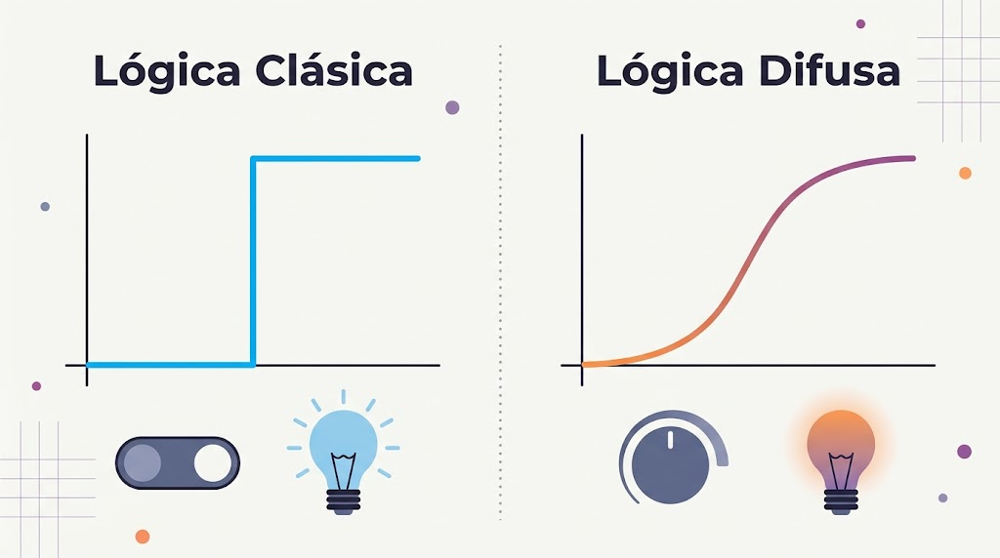
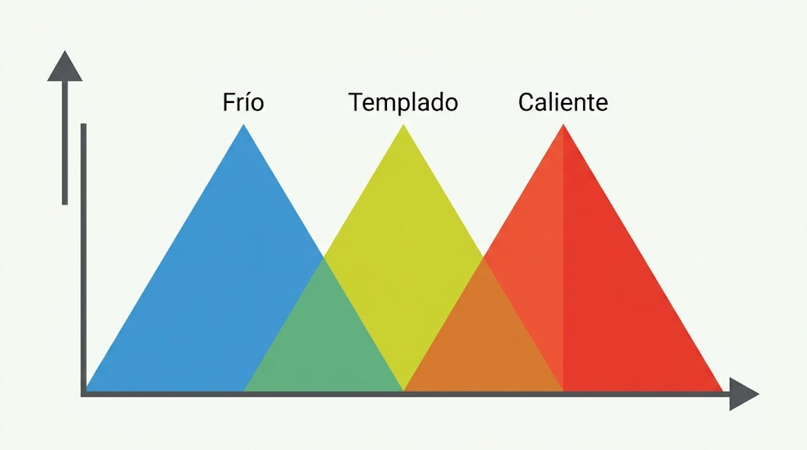
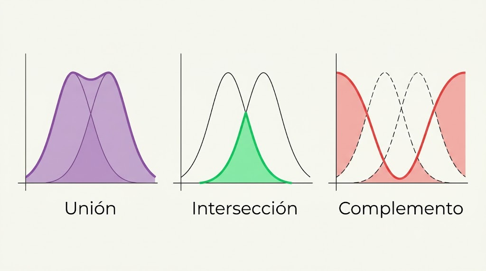

Introducción a la unidad
La lógica difusa (Fuzzy Logic) es una rama de la inteligencia artificial y del cómputo suave que permite representar y procesar información imprecisa, incierta o aproximada.
A diferencia de la lógica tradicional, que trabaja con dos valores posibles (verdadero o falso), la lógica difusa permite representar diferentes grados de pertenencia mediante valores comprendidos entre 0 y 1.
Por ejemplo, una temperatura de 29 °C podría pertenecer al conjunto “templada” con grado 0.3 y al conjunto “caliente” con grado 0.8. Los grados no tienen que sumar 1.
Objetivo general de aprendizaje
Comprender los fundamentos de la lógica difusa, identificar los conjuntos difusos y sus funciones de pertenencia, aplicar operaciones entre conjuntos, diseñar sistemas de inferencia difusa y reconocer sus aplicaciones en problemas reales mediante ejemplos y ejercicios prácticos.
Importancia en el cómputo suave
El cómputo suave busca resolver problemas donde la información no siempre es exacta, completa o determinista. La lógica difusa permite trabajar con expresiones cotidianas como:
Estas expresiones son difíciles de representar mediante condiciones rígidas, pero pueden modelarse matemáticamente con lógica difusa.
2.1. Conceptos básicos de la lógica difusa
2.1.1. ¿Qué es la lógica difusa?
Es un modelo matemático y computacional para representar situaciones en las que una afirmación no necesariamente es completamente verdadera o completamente falsa. Fue propuesta por el matemático y profesor Lotfi A. Zadeh en 1965, mediante su trabajo Fuzzy Sets (Conjuntos difusos).
Una velocidad de 80 km/h puede considerarse alta en una zona urbana, moderada en una carretera o baja en una autopista. La interpretación depende del contexto y la lógica difusa permite representar esa flexibilidad matemáticamente.

Imagina que queremos catalogar si una persona es "Alta".
Lógica clásica: Establece que alguien es alto si mide más de 1.80m. Si una persona mide 1.79m, la máquina dirá categóricamente 0 (Falso / No es alto).
Lógica difusa: Entiende que 1.79m está muy cerca del estándar de "alto". Le asignará un grado de verdad, por ejemplo, 0.95. Esto significa que pertenece en un 95% al concepto de persona alta, lo cual es mucho más cercano a la realidad humana.
2.1.2. Diferencia entre lógica clásica y lógica difusa
Lógica clásica
Una condición se cumple o no se cumple. Ejemplo: una temperatura se clasifica como caliente o no caliente.
Lógica difusa
Una condición puede cumplirse en diferentes grados. Ejemplo: caliente = 0.7 y templada = 0.4.
Ejemplo: una temperatura de 28 °C puede clasificarse como caliente o no caliente en lógica clásica. En lógica difusa puede tener pertenencia 0.7 al conjunto caliente y 0.4 al conjunto templado.
2.1.3. Características principales
- Manejo de imprecisión: representa conceptos que no tienen límites exactos.
- Grados de pertenencia: utiliza valores entre 0 y 1.
- Flexibilidad: permite definir reglas cercanas al razonamiento humano.
- Adaptabilidad: puede utilizarse en diferentes problemas.
- Interpretabilidad: sus reglas pueden expresarse mediante lenguaje natural.
- Tolerancia a información aproximada: no requiere datos perfectamente precisos.
- Modelado de variables lingüísticas: utiliza categorías como bajo, medio, alto, lento, rápido, frío o caliente.
2.1.4. Elementos fundamentales
| Elemento | Descripción | Ejemplo |
|---|---|---|
| Variable lingüística | Variable representada mediante palabras. | Temperatura. |
| Valor lingüístico | Categoría que puede tomar una variable. | Fría, templada, caliente. |
| Universo de discurso | Rango de valores que puede tomar una variable. | 0 a 50 °C. |
| Conjunto difuso | Grupo de valores asociados a una categoría. | Temperatura caliente. |
| Grado de pertenencia | Nivel de pertenencia de un valor a un conjunto. | 0.8. |
| Función de pertenencia | Función matemática que calcula el grado de pertenencia. | Triangular. |
| Regla difusa | Condición que establece una relación entre variables. | Si hace calor, entonces encender ventilador. |
2.1.5. ¿Cómo funciona la lógica difusa?
- Recibe datos de entrada: por ejemplo, temperatura de un sensor.
- Fuzzificación: convierte el dato numérico en grados de pertenencia.
- Inferencia: evalúa las reglas difusas para determinar una respuesta.
- Defuzzificación: convierte el resultado difuso en un valor numérico cuando se necesita una salida concreta.
2.1.6. Ejemplo práctico: control inteligente de temperatura
Una institución educativa automatiza la ventilación de un laboratorio de cómputo. El sistema recibe la temperatura y determina la intensidad del ventilador.
| Temperatura | Clasificación | Acción esperada |
|---|---|---|
| 15 °C | Fría | Apagado |
| 20 °C | Templada | Velocidad baja |
| 25 °C | Cálida | Velocidad media |
| 30 °C | Caliente | Velocidad alta |
| 35 °C | Muy caliente | Velocidad máxima |
En un sistema difuso real, las categorías pueden superponerse. A 25 °C, por ejemplo, la temperatura podría pertenecer simultáneamente a “templada” y “cálida”. Esto evita cambios bruscos de comportamiento.
2.2. Conjuntos difusos y funciones de pertenencia
2.2.1. ¿Qué es un conjunto difuso?
Es una colección de elementos en la que cada elemento puede pertenecer al conjunto en diferentes grados. En conjuntos tradicionales, un elemento pertenece o no pertenece; en conjuntos difusos la pertenencia puede tomar cualquier valor entre 0 y 1.

Ejemplo: clasificación de temperaturas
| Temperatura | Conjunto | Grado de pertenencia |
|---|---|---|
| 27 °C | Fría | 0.0 |
| 27 °C | Templada | 0.3 |
| 27 °C | Caliente | 0.7 |
27 °C pertenece a “templada” con grado 0.3 y a “caliente” con grado 0.7. La suma de los grados no necesariamente debe ser 1.
2.2.2. Diferencia entre conjunto clásico y conjunto difuso
En un modelo clásico de calificaciones se puede establecer: menor a 70 = reprobado; igual o mayor a 70 = aprobado. En un modelo difuso se pueden definir reprobado, regular, bueno y excelente. Una calificación de 75 podría pertenecer a “regular” con 0.6 y a “bueno” con 0.4.
2.2.3. Función de pertenencia
Determina el grado en que un elemento pertenece a un conjunto difuso. Se representa mediante:
Donde μ es la función de pertenencia, A es el conjunto difuso, x es el elemento evaluado y μA(x) es el grado de pertenencia.
| Valor | Interpretación |
|---|---|
| 0.0 | No pertenece al conjunto. |
| 0.2 | Pertenece muy poco. |
| 0.4 | Pertenece parcialmente. |
| 0.6 | Tiene una pertenencia considerable. |
| 0.8 | Tiene una pertenencia alta. |
| 1.0 | Pertenece completamente. |
2.2.4. Tipos de funciones de pertenencia
A. Función triangular
Es una de las funciones más sencillas y utilizadas. Tiene tres parámetros: a (punto inicial), b (punto máximo) y c (punto final).
Ejemplo: temperatura templada. a = 15 °C, b = 25 °C y c = 35 °C. Su máxima pertenencia ocurre en 25 °C. Para 20 °C:
20 °C pertenece al conjunto “templada” con grado 0.5. Se utiliza en clasificación de temperaturas, evaluación de riesgo, control de velocidad y evaluación académica.
B. Función trapezoidal
Utiliza cuatro parámetros: a (inicio), b (inicio de la zona máxima), c (final de la zona máxima) y d (final).
Ejemplo: humedad adecuada. a = 30 %, b = 40 %, c = 60 % y d = 70 %. La pertenencia es máxima entre 40 % y 60 %. Si la humedad es 50 %, μ(50) = 1. Se utiliza en control de humedad, agricultura inteligente, climatización e inventarios.
C. Función gaussiana
Tiene forma de campana y representa transiciones suaves.
x es el valor evaluado, c es el centro, σ determina la amplitud y e es la constante matemática.
Ejemplo: rendimiento de un servidor. Centro = 50 % y desviación = 15 %. Si el uso del procesador es 50 %:
Pertenece completamente al conjunto “uso normal”. Al aumentar a 65 %, su pertenencia disminuye progresivamente. Se utiliza en reconocimiento de patrones, inteligencia artificial y procesamiento de señales.
D. Función sigmoidal
Tiene forma de S y representa una transición progresiva entre dos estados.
a controla la inclinación, c determina el punto central y x es el valor evaluado.
Ejemplo: riesgo de sobrecalentamiento. 20 % = riesgo bajo; 50 % = moderado; 80 % = elevado; 95 % = muy elevado. Se utiliza en evaluación de riesgos, diagnóstico, seguridad informática y detección de anomalías.
2.2.5. Comparación de funciones
| Función | Característica | Aplicación |
|---|---|---|
| Triangular | Forma de triángulo. | Temperatura y velocidad. |
| Trapezoidal | Zona central plana. | Humedad y niveles adecuados. |
| Gaussiana | Forma de campana. | Reconocimiento de patrones. |
| Sigmoidal | Forma de S. | Riesgos y transiciones. |
2.2.6. Ejercicio práctico: clasificación difusa de temperaturas
Se desea clasificar la temperatura de un salón mediante tres conjuntos:
| Conjunto | Parámetros | Función |
|---|---|---|
| Fría | (0, 0, 20) | Trapezoidal |
| Templada | (15, 25, 35) | Triangular |
| Caliente | (25, 40, 40) | Trapezoidal |
Para el conjunto templado se usa la función triangular:
Para 30 °C:
Pregunta de análisis: ¿Qué sucedería si la temperatura fuera 20 °C? ¿A qué conjuntos podría pertenecer simultáneamente?
2.3. Operaciones con conjuntos difusos
Las operaciones permiten combinar, comparar y modificar grados de pertenencia. En lógica clásica se utilizan AND, OR y NOT; en lógica difusa se implementan mediante operadores matemáticos.
Consideremos A = temperatura alta y B = humedad elevada, con:

2.3.1. Intersección (AND)
Representa “Y”. Se utiliza cuando dos condiciones deben cumplirse simultáneamente. El operador mínimo es uno de los métodos más utilizados:
Ejemplo: ventilación cuando la temperatura es alta Y la humedad elevada.
La condición conjunta tiene grado de activación 0.4. Otra alternativa es el producto algebraico:
El mínimo y el producto son operadores diferentes; ambos pueden modelar la intersección dependiendo del sistema.
2.3.2. Unión (OR)
Representa “O”. Basta con que una de las condiciones tenga un grado de pertenencia elevado. La operación más utilizada es el máximo:
La condición combinada tiene grado 0.7. También existe la suma algebraica:
2.3.3. Complemento (NOT)
Representa la negación de un conjunto y expresa lo contrario de una condición.
El complemento de temperatura alta tiene grado 0.3.
2.3.4. Resumen de operaciones
| Operación | Operador | Fórmula |
|---|---|---|
| Intersección | AND | min(A, B) |
| Unión | OR | max(A, B) |
| Complemento | NOT | 1 − A |
2.3.5. Ejemplo práctico: sistema de seguridad de un laboratorio
Un laboratorio registra temperatura y humedad. A = temperatura alta; B = humedad elevada. Reglas: (1) si A Y B, generar alerta; (2) si A O B, generar advertencia; (3) si la temperatura NO es alta, mantener estado normal respecto a esa condición.
Supongamos A = 0.8 y B = 0.6:
| Operación | Cálculo | Resultado |
|---|---|---|
| AND | min(0.8, 0.6) | 0.6 |
| OR | max(0.8, 0.6) | 0.8 |
| NOT A | 1 − 0.8 | 0.2 |
| NOT B | 1 − 0.6 | 0.4 |
La condición conjunta tiene grado 0.6, la condición alternativa 0.8 y el complemento de temperatura alta 0.2.
Imagina un sistema que evalúa si un coche de segunda mano es una "Buena Compra". Sus variables son Precio Bajo y Buen Estado. Si un coche tiene un grado de Precio Bajo de 0.8 y un grado de Buen Estado de 0.4.
Queremos saber si es (Precio Bajo AND Buen Estado): Calculamos min(0.8, 0.4) = 0.4. El grado de pertenencia a "Buena Compra" será de 0.4.
2.4. Sistemas de inferencia difusa
2.4.1. ¿Qué es un sistema de inferencia difusa?
Un sistema de inferencia difusa (SID) es un modelo computacional que utiliza conjuntos difusos, funciones de pertenencia y reglas lingüísticas para tomar decisiones. Transforma información de entrada en una respuesta mediante reglas de la forma SI (condición) ENTONCES (resultado).
Ejemplos: SI la temperatura es alta, ENTONCES la velocidad del ventilador es alta; SI la temperatura es baja, ENTONCES la velocidad es baja; SI la temperatura es templada, ENTONCES la velocidad es media.
2.4.2. Arquitectura y etapas del sistema
Etapa 1. Fuzzificación
Convierte valores numéricos de entrada en grados de pertenencia. Ejemplo: sensor = 30 °C; fría = 0.0, templada = 0.5 y caliente = 0.7 (valores ilustrativos de una definición de conjuntos).
Etapa 2. Base de reglas e inferencia
La base almacena el conocimiento mediante condiciones lingüísticas. Ejemplo:
| Regla | Condición | Resultado |
|---|---|---|
| R1 | SI temperatura es fría | Ventilador apagado |
| R2 | SI temperatura es templada | Ventilador medio |
| R3 | SI temperatura es caliente | Ventilador rápido |
| R4 | SI temperatura es muy caliente | Ventilador máximo |
El motor de inferencia evalúa qué reglas se activan y con qué intensidad.
Etapa 3. Agregación
Combina los resultados de las reglas activadas. Por ejemplo: velocidad baja con grado 0.2, media con grado 0.5 y alta con grado 0.7. Se combinan para obtener un resultado difuso general.
Etapa 4. Defuzzificación
Transforma el resultado difuso en un valor numérico concreto. Ejemplo: salida difusa “media-alta” y salida numérica 75 % de potencia. Uno de los métodos más utilizados es el centroide o centro de gravedad:
z* es el resultado numérico, z son los valores posibles de salida y μ(z) es el grado de pertenencia de cada valor. En aplicaciones discretas puede utilizarse:
Este método calcula un promedio ponderado de los valores de salida.
2.4.3. Tipos de sistemas de inferencia difusa
A. Sistema Mamdani
Utiliza reglas cuyas salidas también son conjuntos difusos. Ejemplo: SI la temperatura es alta, ENTONCES la velocidad del ventilador es rápida. La salida “rápida” se representa mediante una función de pertenencia.
- Es intuitivo y fácil de interpretar.
- Utiliza variables lingüísticas.
- Sus reglas son comprensibles para las personas.
- Requiere defuzzificación para obtener una salida numérica.
Aplicaciones: control de temperatura, sistemas de ventilación, electrodomésticos y sistemas de decisión.
B. Sistema Sugeno
Utiliza funciones matemáticas o constantes como resultado de las reglas. Ejemplo: SI la temperatura es alta, ENTONCES velocidad = 2(temperatura) + 10. Si la temperatura es 30 °C:
La salida de cada regla es un valor o función matemática y se obtiene una combinación ponderada de las salidas activadas.
- Facilita los cálculos matemáticos.
- Es eficiente computacionalmente.
- Se integra con técnicas de optimización.
- Es útil para sistemas adaptativos y modelos de control.
Comparación Mamdani y Sugeno
| Característica | Mamdani | Sugeno |
|---|---|---|
| Salida de reglas | Conjuntos difusos | Constantes o funciones |
| Interpretación | Muy intuitiva | Más matemática |
| Defuzzificación | Generalmente centroide | Promedio ponderado |
| Uso | Control y decisión | Control y optimización |
| Complejidad computacional | Puede ser mayor | Generalmente menor |
2.5. Aplicaciones de la lógica difusa
La lógica difusa tiene numerosas aplicaciones en ciencia, industria, educación y tecnología. Su principal ventaja es desarrollar sistemas capaces de tomar decisiones utilizando información aproximada y condiciones que no siempre tienen límites definidos.
2.5.1. Automatización de electrodomésticos
Permite ajustar automáticamente el funcionamiento de aparatos según las condiciones del entorno.
- Aires acondicionados: ajustan potencia de enfriamiento según temperatura y humedad.
- Lavadoras: determinan tiempo de lavado según cantidad de ropa y suciedad.
- Refrigeradores: regulan enfriamiento según cantidad de alimentos y aperturas de puerta.
- Hornos: ajustan temperatura y tiempo de cocción.
2.5.2. Industria y control de procesos
Permite controlar procesos de producción que requieren ajustes constantes.
- Control de temperatura en maquinaria.
- Regulación de presión.
- Control de velocidad de motores.
- Supervisión de procesos industriales.
- Identificación de condiciones anormales.
2.5.3. Robótica e inteligencia artificial
Permite que los robots tomen decisiones ante situaciones cambiantes.
- Control de movimiento.
- Navegación autónoma.
- Evitación de obstáculos.
- Control de velocidad.
- Manipulación de objetos.
2.5.4. Medicina y sistemas de diagnóstico
Puede desarrollar sistemas de apoyo a la toma de decisiones cuando los síntomas o mediciones no presentan límites completamente definidos.
- Evaluación de factores de riesgo.
- Monitoreo de pacientes.
- Clasificación de síntomas.
- Sistemas de apoyo al diagnóstico.
- Evaluación de condiciones clínicas.
2.5.5. Agricultura inteligente
Utiliza sensores y automatización para optimizar el consumo de agua y mejorar condiciones de cultivo.
- Control automático de riego.
- Monitoreo de humedad del suelo.
- Evaluación de condiciones climáticas.
- Control de temperatura en invernaderos.
- Supervisión del crecimiento de cultivos.
2.5.6. Industria automotriz
Puede utilizarse en sistemas electrónicos de control y asistencia.
- Sistemas de frenado y estabilidad.
- Control de transmisión.
- Suspensión electrónica.
- Asistencia a la conducción.
- Control de climatización.
2.5.7. Finanzas y evaluación de riesgos
Permite analizar variables económicas que pueden presentar incertidumbre.
- Evaluación de riesgos crediticios.
- Clasificación de perfiles financieros.
- Análisis de inversiones.
- Evaluación de capacidad de pago.
- Sistemas de apoyo a decisiones económicas.
2.5.8. Seguridad informática
Puede analizar indicadores de comportamiento y detectar posibles amenazas.
- Detección de actividades sospechosas.
- Clasificación de tráfico de red.
- Evaluación de vulnerabilidades.
- Identificación de patrones anormales.
- Priorización de incidentes de seguridad.
2.5.9. Comparación de aplicaciones
| Área | Problema que resuelve | Resultado |
|---|---|---|
| Electrodomésticos | Ajustar funcionamiento. | Optimización. |
| Industria | Controlar procesos. | Mayor estabilidad. |
| Robótica | Navegar y evitar obstáculos. | Movimiento adaptable. |
| Medicina | Analizar indicadores. | Apoyo a decisiones. |
| Agricultura | Controlar riego. | Ahorro de agua. |
| Automoción | Regular sistemas del vehículo. | Mayor control. |
| Finanzas | Evaluar riesgos. | Clasificación. |
| Ciberseguridad | Analizar actividad sospechosa. | Priorización de alertas. |
2.5.10. Ventajas y limitaciones
Ventajas
- Trabaja con información imprecisa.
- Representa conceptos del lenguaje humano.
- Facilita sistemas de control.
- Combina diferentes variables.
- No requiere necesariamente modelos matemáticos exactos del sistema físico.
- Sus reglas pueden ser comprensibles y explicables.
Limitaciones
- Definir funciones puede requerir experiencia.
- La selección de reglas influye en los resultados.
- Un sistema mal diseñado puede decidir incorrectamente.
- Con muchas variables, las reglas pueden crecer considerablemente.
- No aprende automáticamente por sí sola: necesita reglas y parámetros, o integrarse con técnicas de aprendizaje.
- No elimina la incertidumbre ni garantiza decisiones correctas.
Resumen general de la Unidad 2
| Tema | Conocimientos fundamentales |
|---|---|
| 2.1. Conceptos básicos | Lógica difusa, lógica clásica, grados de verdad, variables lingüísticas. |
| 2.2. Conjuntos difusos | Conjuntos, funciones de pertenencia, triangular, trapezoidal, gaussiana y sigmoidal. |
| 2.3. Operaciones | Intersección AND, unión OR y complemento NOT. |
| 2.4. Inferencia difusa | Fuzzificación, reglas, agregación, defuzzificación, Mamdani y Sugeno. |
| 2.5. Aplicaciones | Industria, robótica, medicina, agricultura, automoción, finanzas y seguridad informática. |
Glosario de conceptos importantes
| Concepto | Definición |
|---|---|
| Lógica difusa | Modelo matemático que trabaja con grados de pertenencia. |
| Conjunto difuso | Conjunto cuyos elementos tienen diferentes grados de pertenencia. |
| Pertenencia | Grado en que un elemento forma parte de un conjunto. |
| Fuzzificación | Conversión de datos numéricos en valores difusos. |
| Inferencia | Proceso de evaluación de reglas difusas. |
| Agregación | Combinación de los resultados de las reglas. |
| Defuzzificación | Conversión de una salida difusa en un valor numérico. |
| Mamdani | Sistema de inferencia con salidas difusas. |
| Sugeno | Sistema de inferencia con salidas numéricas o funciones matemáticas. |
Bibliografía recomendada
- Zadeh, L. A. (1965). Fuzzy sets. Information and Control, 8(3), 338–353. https://doi.org/10.1016/S0019-9958(65)90241-X
- Mamdani, E. H., & Assilian, S. (1975). An experiment in linguistic synthesis with a fuzzy logic controller. International Journal of Man-Machine Studies, 7(1), 1–13. https://doi.org/10.1016/S0020-7373(75)80002-2
- Sugeno, M. (1985). Industrial applications of fuzzy control. Elsevier.
- Ross, T. J. (2010). Fuzzy logic with engineering applications (3rd ed.). Wiley.
- MathWorks. (s. f.). Fuzzy Logic Toolbox. Documentación de Fuzzy Logic Toolbox.
Autoevaluación rápida
Comprueba lo aprendido con estas preguntas. Selecciona una respuesta y presiona “Calificar”.